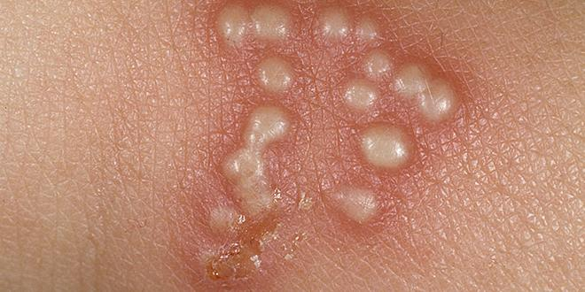
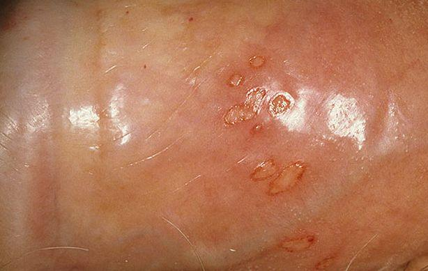
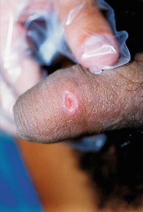
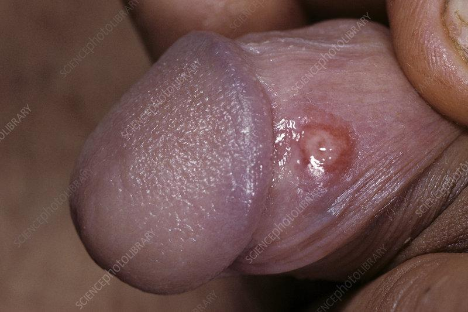
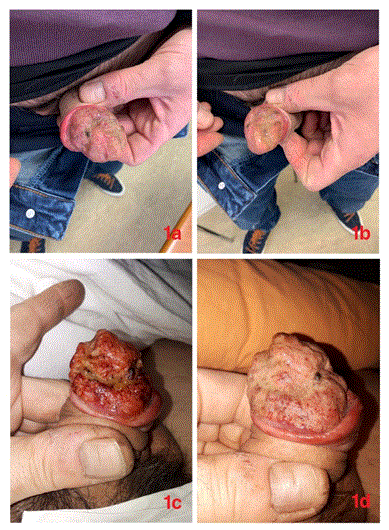

Penile Rash / Penile Ulcer Case
Case Introduction
Your next patient is a 57 year old man who has presented to your General Practice complaining of a rash on his penis.
Task:
- Take history for 6 minutes, you will be given a prompt time at 6 mins
- Explain your diagnosis and differentials
- Photo given.
Differential Diagnosis
Sexually Transmitted Infections
- Herpes
- Syphilis
- Lymphogranuloma venereum (subtype of chlamydia)
- Donovanosis
- Chancroid
Other Causes
- Fixed drug eruption
- Aphthous (viral) ulcers
- Genital warts
- Squamous cell carcinoma
- Contact dermatitis / balanitis
- Shingles
- (Crohn’s disease – optional, not essential)
Key Characteristics of Important Conditions
Herpes
- Painful
- Vesicular lesions
- Feverish on first episode
- Tender inguinal lymph nodes
Syphilis
- Painless ulcer
- Patient often ignores it
- Leads to secondary and tertiary syphilis
- Lymph nodes usually non-tender (can be tender)
History Taking Structure
1. Opening & Sensitivity Statement
- Acknowledge sensitive nature
- Emphasize confidentiality
Example dialogue:
“Before we start, I just wanted to let you know that I’ll be asking some sensitive questions today. Is that okay with you? Everything we discuss will be confidential.”
2. Open-ended Question
Example dialogue:
“Can you tell me more about the problem you’re having?”
“How can I help you today?”
- Address patient concern and reassure
Example dialogue:
“I understand this can be worrying. Let me ask you a few questions so we can figure out the cause and manage it properly.”
3. Exploring the Rash
A. Timing
- When did you first notice the rash?
- Is this the first time u have such rash?
- Is it getting worse?
B. Site
- Is it on the Tip of the penis?
- Foreskin?
- Shaft?
Redness around foreskin → think balanitis first
C. Description / Appearance: does the rash looks like:
- Blisters? - it looks like sacs that are filled with fluid
- Ulcer?
- Red patch?
Patients may say “fluid-filled sacs” instead of blisters
D. Key Character Questions
- Is it itchy? → think dermatitis
- Is it painful?
- Painful ulcer → non-syphilitic ulcers
- Painless ulcer → syphilis
- Painful ulcer → non-syphilitic ulcers
- Have u noticed Any discharge from rash?
4. Associated Symptoms
- Fever and chills
- Tiredness and body aches
- Lumps in groin (tender or non-tender)
- Penile discharge
- Scrotal swelling, pain, or redness
- Urinary symptoms:
- Pain on passing urine
- Increased frequency
- Pain on passing urine
5. Sexual History (Essential to Pass)
If not done properly → you will not pass
Key Questions
- Are you sexually active?
- Ever been sexually active?
- Stable or multiple partners?
- Partner preference:
- Male / Female / Both
- Male / Female / Both
- Condom use and safe sex
- method of sex:
- Vaginal
- Oral
- Anal
- Vaginal
- Previous STIs: have u ever been diagnosed with STIs before u or any of your partner
- Patient or partners
- Patient or partners
- Alcohol or drug use during sex (optional)
Typical recall answer:
- Casual partner
- No condom use
6. Cancer Screening Questions
- Weight loss
- Loss of appetite
- Lumps or bumps anywhere in the body
7. Dermatitis / Balanitis
- New soap
- New body wash
- New creams
- New underwear
8. Fixed Drug Eruption
- Any new medications?
- Especially antibiotics
9. Background History
- Past medical history
- Drug history
- Social history
- Family history
Recall Case Findings
- Rash for a few days
- Fluid-filled sacs → blisters
- Painful
- Feverish and tired
- Painful groin lumps
- Casual partner, no condom use
Photo-Based Diagnosis
1. Herpes

- Grouped vesicular lesions
- Painful
- Vesicles may rupture after few days → appear as group of ulcers not a big ulcer

Ruptured vesicles ≠ single ulcer
2. Syphilis

- Single painless ulcer
- Indurated margins
- May be partially healed when seen

3. Genital Warts
- Multiple raised lesions
- Irregular appearance
- Typical wart morphology
4. Cancer (SCC)
- Irregular
- Ugly-looking
- Non-healing
- Present for months
- Usually painless

Any non-healing lesion → biopsy
Final Diagnosis in Exam Case
- Genital herpes
Explaining Diagnosis to the Patient
- It is Viral sexually transmitted infection
- REASONS:
- Fever and tiredness
- Painful lesion
- Group of blisters on penis
- Fever and tiredness
Differentials to Mention
- Syphilis
- Lymphogranuloma venereum
- Chancroid
- Donovanosis
- Fixed drug eruption
- Aphthous ulcers
- Genital warts
- Squamous cell carcinoma
- Balanitis
- Shingles
Conditions Not Preferred
- Fungal infection (tinea)
- Usually groin, not penis
- Not ideal to include
- Usually groin, not penis